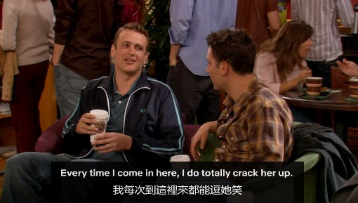
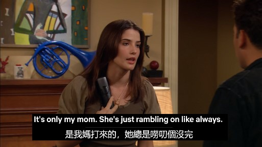
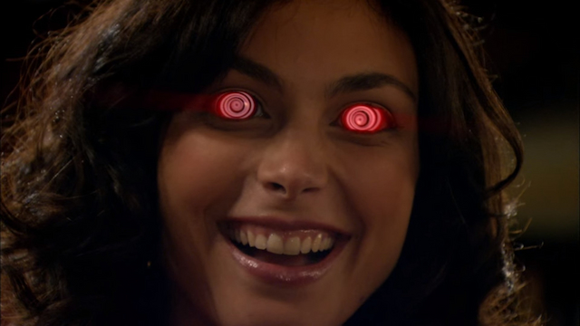
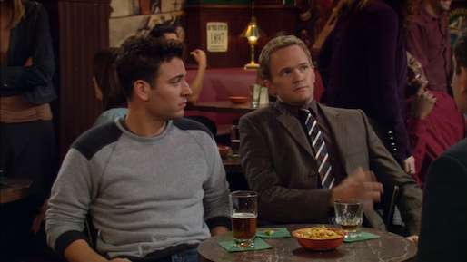

狗狗打字機
狗狗打字機
【看美劇學英語】
How I Met Your Mother S2EP7 - Swarley
重點詞彙
- crack sb. up 使人捧腹大笑 
- ramble (on) 嘮叨不停，閒扯個沒完 
- vulnerability 脆弱（性）
- hilarious 非常滑稽的，引人發笑的
- pupil 瞳孔
- afflict 折磨，使痛心
- bubble to the surface 更多資訊、答案浮現
- midget 侏儒
- trample 跌倒
- hideous 極醜的；極壞的
- knock up 使（某人）懷孕
Halu is such a comedian. His story really cracked me up!
哈魯真是個諧星，他的故事讓我笑翻了！
Sorry, I'm rambling (on) - let me get back to the point.
對不起，扯遠了——我再回到要點上來。
I love to ramble through the fields and lanes in this part of the country.
我喜歡在這片鄉村地區的田野和小路上漫步。
An old clematis rambles over the garden wall.
一株老鐵線蓮爬滿了花園的牆壁。
More facts about the airplane crash are bubbling to the surface as investigators survey the crash site.
隨著調查員對飛機墜毀地點的調查，墜機的真相也逐漸浮現。
She wears the most hideous colour combinations you could ever imagine.
她的穿著是你能想像到的顏色搭配得最難看的。
You don't want to get knocked up by some guy you hardly know.
I'm sorry to have to knock you up in the middle of the night
很抱歉，我不得不半夜敲門叫醒你。
The long journey knock them up
長途旅行把他們累壞了。
劇情看點
- Swarley
- crazy eyes  
- Marshall and Lily were back together!
Barney 實在是太可愛了kkk。莫名其妙被類似星巴克的咖啡店員寫錯名字。中間一度想裝作很喜歡新名字（可愛鬼掙扎法）， 被Ted無情揭穿後又開始爆氣，罵罵咧咧的奪門而出有夠可愛。後來 Robin 也被叫錯名字後，一個人很開心在那邊玩諧音梗，結果沒人要理他， 去酒吧被全部人大喊 Swarley，這裡很巧妙地扣回開頭說酒吧裡絕對不會發生這種事（被亂取名字）www，好像是喜劇中一種 callback 技巧的應用， 再次呼應前面說過的 joke。
看了 5 遍每次都發現新的笑點 XD
BTW Netflix不知道為啥把Swarley翻成色鬼，其實英文根本沒有這個字，不過成功創造另一種笑點，翻譯加分加分。
編劇真的是腦洞大開，crazy eyes的動畫我看一次笑一次，配上"Swarley"的驚恐臉超可愛（本 Barney 唯粉）。pupil跟pupi那裡也很好笑。
本集最佳，這對小情侶太可愛了， Lily 委委屈屈地坐在門口階梯上讓 Marshall 趕快回去陪他的約會對象， Marshall 兩百分直球法挽回，我們 Lily 寶寶不用裝懷孕啦 XDD